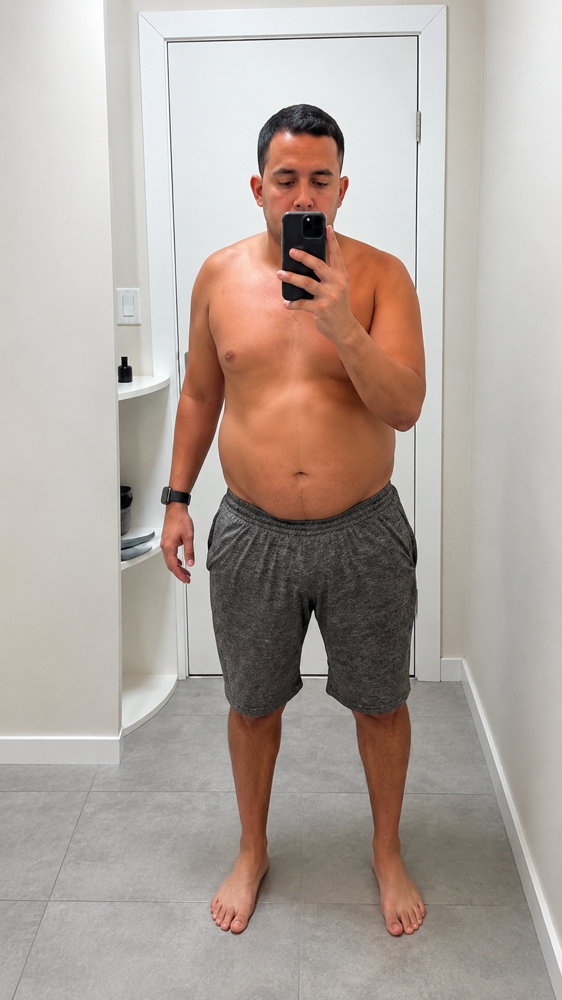
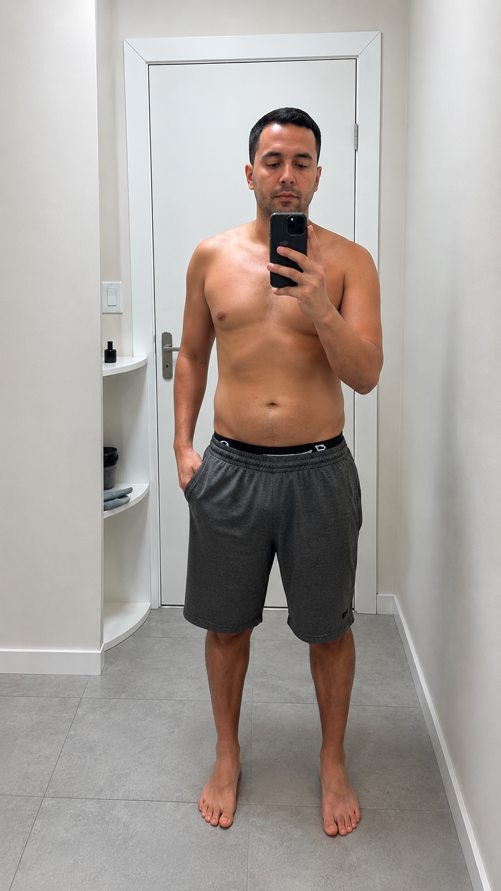

Você, seu corpo está pedindo socorro — e existe uma saída natural
Descubra a receita que suprime o apetite, queima gordura e regula o metabolismo — com ingredientes que custam menos de R$20 no mercado.
🔒 Garantia de 30 dias • Acesso imediato ao PDF
Como funciona
O que o Mounjaro de Pobre faz com seu corpo
O Mounjaro original custa R$ 2.800/mês e age por meio de mecanismos hormonais. Nossa receita replica esses mesmos mecanismos com ingredientes naturais e acessíveis.
Suprime o Apetite Naturalmente
Ingredientes específicos ativam o GLP-1, o hormônio da saciedade que o Mounjaro imita artificialmente. Você come menos sem sofrer — a fome simplesmente vai embora.
Regula o Açúcar no Sangue
Berberina, canela e outros compostos regulam a glicemia e eliminam os picos de insulina — o principal gatilho do acúmulo de gordura abdominal.
Acelera o Metabolismo
Termogênicos naturais aumentam a queima calórica em até 18% sem causar taquicardia, insônia ou ansiedade. Seu corpo vira uma máquina de queimar gordura.
Elimina a Inflamação Crônica
A gordura abdominal gera inflamação que bloqueia o emagrecimento. A receita rompe esse ciclo vicioso nas primeiras 2 semanas de uso.
Desintoxica o Fígado
Um fígado sobrecarregado não processa gordura. Os ingredientes purificadores restauram a função hepática e destravam o metabolismo travado.
Zera a Compulsão Noturna
Atua nos neurotransmissores responsáveis pela compulsão alimentar, especialmente à noite — o momento em que a maioria sabota a dieta.
⏱️ O que esperar semana a semana
Desinchamento
Redução do inchaço e melhora de energia. Roupas já ficam mais folgadas.
Primeiros quilos
Balança começa a mostrar resultado. Apetite reduz significativamente.
Transformação
Perda consistente de 4–8 kg. Disposição alta, sono melhorado.
Novo corpo
Transformação visível. Roupas de tamanhos menores. Saúde restaurada.
Comparativo
Por que pagar R$ 2.800 se o resultado é o mesmo?
Mounjaro Original
- ❌ R$ 2.800 por mês
- ❌ Receita médica obrigatória
- ❌ Náusea, vômito, diarreia
- ❌ Dependência a longo prazo
- ❌ Demora para conseguir
Mounjaro de Pobre
- ✅ R$ 37 dose única
- ✅ Sem receita, sem fila
- ✅ Zero efeitos colaterais
- ✅ Emagrece e mantém
- ✅ Acesso imediato ao PDF
Resultados reais
Pessoas que usaram e transformaram o corpo
Resultados obtidos seguindo a receita por 60–90 dias. Sem academia, sem dieta restritiva.


Depoimentos
O que dizem quem já usou
"Fiquei desconfiada no começo. Mas em 10 dias já tinha perdido 3 kg e a barriga estava bem menor. Agora são 22 kg a menos em 5 meses."
"Meu marido perdeu 15 kg e eu 11 kg juntos seguindo a receita. É simples, barato e funciona de verdade. Muito melhor que qualquer dieta que já fizemos."
"Tenho diabetes tipo 2. Desde que comecei a receita, minha glicemia regularizou e perdi 9 kg. Meu médico ficou impressionado com os exames."
Oferta exclusiva
Garanta seu acesso agora
Mounjaro de Pobre — Receita Completa
PDF com a receita completa, modo de preparo, dosagem e protocolo de 90 dias para transformação total.
- ✓ Receita completa com ingredientes e modo de preparo
- ✓ Protocolo de 90 dias passo a passo
- ✓ Lista de compras (menos de R$20 no mercado)
- ✓ Guia de potencializadores naturais
- ✓ Bônus: Cardápio anti-inflamatório de 7 dias
Dúvidas frequentes
Perguntas e Respostas
É uma receita natural feita com ingredientes encontrados em qualquer mercado ou farmácia, que replicam os mecanismos de ação do medicamento Mounjaro (tirzepatida) — supressão de apetite, regulação da glicemia e aceleração do metabolismo — sem os efeitos colaterais e sem o custo absurdo.
A maioria das pessoas relata redução do apetite já na primeira semana. Desinchamento visível entre 10 e 14 dias. Perda de peso consistente a partir do mês 1. O protocolo completo é de 90 dias para transformação total.
Não há restrição alimentar severa no protocolo. A própria receita reduz naturalmente o desejo por alimentos ultraprocessados. Atividade física potencializa os resultados, mas não é obrigatória para emagrecer.
Os ingredientes são naturais e usados há séculos na medicina integrativa. Não há relatos de efeitos adversos sérios. Pessoas com condições médicas específicas devem consultar seu médico antes de iniciar qualquer protocolo de emagrecimento.
Os ingredientes custam em média R$ 15 a R$ 20 e duram o mês inteiro. Você paga R$ 37 uma única vez pelo PDF com a receita completa, e depois replica com custo mínimo todo mês.
Você tem 30 dias de garantia total. Se não perder nenhum peso ou não ficar satisfeito por qualquer motivo, basta enviar uma mensagem e devolvemos 100% do seu dinheiro. Sem burocracia, sem perguntas.